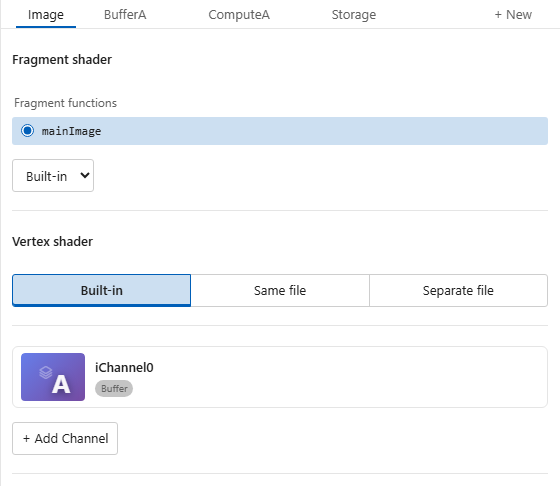

Configure Passes and Inputs¶
The config panel is where you set up shader passes and choose their inputs. Everything is stored in a .sha.json file that the visual editor writes for you.
Opening the Config Panel¶
Click the Config button in the toolbar.

Pass Cards¶
The cards at the top show the current shader's passes and their types. Select a card to edit its settings. Click + New to add a pass. Remove a pass with the × on its card (Image cannot be removed).
Click a render pass's eye button to preview its output. The Viewing badge identifies the displayed pass, independently of the selected settings card. Click Image's eye to return to the final output. Compute cards are labeled Compute pass and their settings explain that direct preview is unavailable; Common, Script, and Storage also have no eye button.
While the debugger renders a selected code line, Viewing · L24 follows that line's pass and the label above the canvas also shows the line number. Pass eye buttons are disabled while line rendering controls the output. Turn off line rendering to return to your chosen pass preview.
Right-click a card's name to open a context menu:
- Open — opens the pass's file in the editor without changing the lock setting
- Preview this pass — displays a render pass with its configured inputs and Common code; choose this on Image to return to the final output
- Preview file standalone — makes a buffer's source file the active shader, using its own matching config if present
- Rename — inline rename for buffer passes (Image, Common, and Script cannot be renamed)
| Card | Description |
|---|---|
| Image | Always present. The final rendered output from the main shader file. Supports mainImage or a selected native WGSL/Slang fragment. No file chooser. |
| Named buffer pass | An intermediate fragment render pass backed by a .glsl, .slang, or .wgsl file. Names and pass counts are unrestricted. |
| Compute pass | A Slang or WGSL compute pass declared with "type": "compute" and backed by a .slang or .wgsl file. |
| Common | Shared functions, constants, and types used by other passes. |
| Script | A TypeScript or JavaScript file that drives custom uniform values per frame. |
Note
Double-click a pass card's name to open that pass's file. Files linked to the current shader keep its preview visible without locking it. Selecting settings never changes the viewed pass. See Locking and buffer previews.
The Image Pass¶
For WGSL and Slang render passes, Render output shows the active Function. A single selected function appears as text; when more functions are available, use the picker to choose which one renders. A missing configured function stays visible with (missing) so you can correct it.
Choose + Add… to insert either a Native fragment function or
Built-in mainImage into the pass's shader file. The built-in action is disabled
when mainImage is already present. Adding inserts code; picking a function
selects existing code. Changes are saved with the shader configuration.
The Image card has no file path — it always corresponds to your main shader file. You can set a default resolution here:
| Setting | Options | Description |
|---|---|---|
| Scale | 0.25×, 0.5×, 1×, 2×, 4× | Relative to the panel size |
| Aspect ratio | 16:9, 4:3, 1:1, Fill, Screen | Constrains the canvas shape. Screen uses your screen's aspect ratio. |
| Custom dimensions | e.g. 1920 × 1080 |
Base width and height in pixels |
The Image pass can also have input channels. GLSL and Slang access them by the
configured name, such as iChannel0 or iChannel1; Slang also supports direct
channel methods such as iChannel0.Sample(uv). WGSL uses its existing separate
texture/sampler handles and free functions such as iChannel0Sample(uv). The
.sha.json field remains inputs. See Channels for how to bind
textures, video, audio, and more.
See Resolution for how these settings interact with the toolbar.
scaleandwidth/heightare composable. For example,width: 320,height: 180,scale: 2renders as640 × 360.
Buffer Passes¶
Each buffer pass uses a .glsl, .slang, or .wgsl file to produce an image that other passes can sample. Buffer pass names are ordinary identifiers such as Flow, BloomHorizontal, or BufferA; there is no BufferA–BufferD name set or four-pass limit. Every pass can configure its own channels: GLSL uses iChannelN and iChN, Slang uses direct globals such as iChannelN, and WGSL uses free functions such as iChannelNSample(uv). See Channels for how to bind textures, video, audio, and more.
Choose + New → Cubemap to create a cubemap buffer. Its Output section sets the square face size (512 pixels by default). To use the result, add a Buffer channel to a later pass and select the cubemap pass in Misc. Sample it with a three-component direction vector rather than a two-component UV coordinate. See Cubemap Buffers for a complete walkthrough.
The Shader file picker shows the pass's file. Click it to choose from the files already used by the config, or use Browse workspace…, Create file…, or Enter a path… to type one. Open editor opens the pass's file. Several passes can use the same source file, each selecting a different function. Standalone’s Browse action selects files from its virtual workspace.
Three path forms are supported:
| Form | Example | Resolves relative to |
|---|---|---|
| Relative | passes/flow.slang |
The main shader file |
| Absolute | /Users/me/project/flow.glsl |
Filesystem root |
| Workspace-root | @/src/flow.glsl |
VS Code workspace root (/ of the virtual workspace in the standalone browser host) |
Create file… generates a source template using the shader mode preference. For WGSL/Slang, Render output → Function shows the selected fragment function; use the picker when multiple functions are available. + Add… inserts a native fragment function or built-in mainImage into that file. A native fragment can run without mainImage, and native templates use the generated vertex stage until you request a custom one. GLSL has no fragment function selector or Built-in/Native chooser because it uses the fixed mainImage hook.
The pass sections are arranged as Fragment source/functions, Channels, Geometry, Rendering, Resolution, Output, and Vertex shader. Image omits the file chooser. Output selects 2D or Cubemap, its cubemap face size, the buffer format, and read-only inferred output slots and names.
Resolution (optional) — by default a buffer inherits the Image pass resolution exactly. You can override this in two ways:
| Mode | Example | Description |
|---|---|---|
| Fixed | 512 × 512 |
Exact pixel dimensions, independent of the canvas |
| Scale | 0.5× |
Multiplier on the Image resolution — tracks canvas changes |
Native Entry Points and Shared Files¶
Slang and WGSL both run on WebGPU and support this workflow.
An entry point is the function a shader pass runs. WGSL marks these functions with @vertex, @fragment, or @compute; Slang uses [shader("vertex")], [shader("fragment")], or [shader("compute")].
You can keep these functions in one shader file and choose a different function for each pass. In Config, select the function under Fragment shader, Vertex shader, or the compute pass's function list. Add each pass you need with + New; writing another function does not create a pass.
You can also mix a native stage with a Built-in stage. With no custom vertex selection, Shader Studio uses its built-in vertex shader and any configured mainVertex hook. With no native fragment selection, it uses mainImage.
Native fragments receive WebGPU coordinates with a top-left origin; mainImage receives bottom-left coordinates. Native stages still receive Shader Studio's built-in globals, configured channel helpers, and storage declarations. Group 0 bindings are reserved for these generated resources; do not redeclare their bindings. See Vertex Shaders for compatible mesh inputs and transforms.
Example: Share a WGSL File¶
Create a file named shared.wgsl in your shader workspace and paste in this example:
@vertex fn fullscreen(@builtin(vertex_index) index: u32) -> @builtin(position) vec4f {
let p = array(vec2f(-1, -1), vec2f(3, -1), vec2f(-1, 3));
return vec4f(p[index], 0, 1);
}
@fragment fn image(@builtin(position) pixel: vec4f) -> @location(0) vec4f {
return vec4f(pixel.xy / iResolution.xy, 0.5, 1);
}
@compute @workgroup_size(1)
fn advance(@builtin(global_invocation_id) id: vec3u) {
// Update configured storage here.
}
Save the following configuration as shared.sha.json beside it, then open shared.wgsl in the preview. You should see a red/green gradient with a constant blue component. The example compute function does no work until you add your own code.
{
"version": "1.0",
"webgpu": { "defaultRenderAuthoring": "native" },
"passes": {
"ComputeAdvance": {
"type": "compute", "path": "shared.wgsl",
"entryPoints": { "compute": "advance" },
"dispatch": { "count": 1 }
},
"BufferA": {
"path": "shared.wgsl",
"entryPoints": { "vertex": "fullscreen", "fragment": "image" }
},
"Image": { "entryPoints": { "vertex": "fullscreen", "fragment": "image" } }
}
}
Image and BufferA both select fullscreen and image from the same file; ComputeAdvance selects advance. Each pass uses its own configured channels, uniforms, and storage, so you can reuse a file with different inputs. Shared helpers can also live in a Common pass.
Cubemap Buffers¶
A cubemap stores the view in six directions as six square faces. Use a cubemap buffer to generate an environment or reflection texture that other passes can sample. Its face size is independent of the preview canvas size.
GLSL fragment shaders and Slang fragment or compute shaders can generate cubemaps. WGSL cubemap generation is not supported yet.
Create and Preview a Cubemap¶
- Open a GLSL or Slang shader and choose Config → + New → Cubemap.
- In the new pass, click the Shader file picker and choose Create file… to create a starter shader, or choose an existing file containing
mainCubemap. - In Output, set Face size (512 pixels by default).
- In Preview, choose Face, Cross layout, or Environment to inspect the result. The starter colors each direction differently.
- Choose Image output to return to your final shader image.
Changing the preview view does not change the saved shader configuration. Slang cubemap passes also offer Cubemap execution to choose Fragment or Compute.
Write the Cubemap Shader¶
A fragment pass calls mainCubemap once per pixel of every face. fragCoord is the face pixel coordinate, rayOri is zero, and rayDir is the normalized sampling direction:
void mainCubemap(out vec4 color, in vec2 fragCoord,
in vec3 rayOri, in vec3 rayDir) {
color = vec4(rayDir * 0.5 + 0.5, 1.0);
}
float4 mainCubemap(float2 fragCoord, float3 rayOri, float3 rayDir) {
return float4(rayDir * 0.5 + 0.5, 1.0);
}
Sample the Cubemap in Another Pass¶
In the receiving pass, add a channel such as iChannel0, open Misc, and select the cubemap pass. In GLSL, sample it with texture(iChannel0, direction); in Slang, use iChannel0.Sample(direction).
For example, this GLSL Image shader views the cubemap along the positive Z direction. Place it in your main shader file after connecting iChannel0:
void mainImage(out vec4 fragColor, in vec2 fragCoord) {
vec2 uv = fragCoord / iResolution.xy * 2.0 - 1.0;
vec3 direction = normalize(vec3(uv, 1.0));
fragColor = texture(iChannel0, direction);
}
If you prefer to edit the configuration directly, save the cubemap shader as environment.glsl beside the main shader and use this .sha.json configuration:
{
"version": "1.0",
"passes": {
"Cubemap": {
"path": "environment.glsl",
"outputKind": "cubemap",
"faceSize": 512
},
"Image": {
"inputs": { "iChannel0": { "type": "buffer", "source": "Cubemap" } }
}
}
}
Slang Compute Cubemaps¶
For a Slang compute cubemap, use cubemapDirection(pixel.xy, face) to get the direction for a face pixel and writeOutput(pixel.xy, face, color) to write its color. Face indices 0–5 are +X, −X, +Y, −Y, +Z, and −Z. The default Output texels dispatch covers all six faces; the Z coordinate identifies the face. cubemapDirection samples the center of the pixel.
Limits and Feedback¶
Faces default to 512 pixels and are limited by the device's texture limits. Cubemap passes use fullscreen fragment rendering or Slang compute; custom vertex stages, mesh geometry, multiple outputs, 2D resolution settings, and per-layer channel selection are unavailable. Nearest and linear filtering use the base level; generated mipmaps are not provided.
For feedback effects, connect the cubemap pass to one of its own channels: it reads its previous frame, starting from a cleared image. Later passes read all six faces from the current frame. Changing Face size or pressing Reset clears the feedback history. Resizing the preview canvas keeps the configured face size.
Per-Pass Geometry¶
Each buffer and Image pass can render with 2D or 3D geometry. Open the Geometry dropdown in the pass config to choose:
| Geometry | Description |
|---|---|
| Fullscreen | One triangle covering the screen (default). Standard 2D shader rendering. |
| Vertices | Any number of vertices placed by the vertex shader, joined as triangles, lines, or points, in world space (seen by the orbit camera) or clip space (fixed on screen). Set Vertices, Topology and Space below the dropdown. |
| Plane | A flat 3D plane. |
| Cube | A unit cube centred at the origin. |
| Sphere | A UV-mapped sphere. |
| Model | A custom GLB mesh. |
The Vertex shader section appears last: after Resolution for Image and after Output for render buffers. Choose Built-in, Same file, or Separate file. Separate file shows its path and Change… chooser; Same file hides the duplicate path. Vertex function rows come from the selected vertex source. Add function… inserts into that source. GLSL shows only Add when mainVertex is missing, without a function selector or mode chooser. See Vertex Shaders for details on writing vertex shaders and the mainVertex API, and Vertices geometry for vertexCount, topology and space.
The Rendering section after Geometry sets the pass's Blend mode, and for every geometry but fullscreen its Depth test, Depth write, Compare and Cull. See Render settings.
GPU Storage¶
Each storage buffer has its own card, labeled Storage buffer with its element count. Select it to open Settings / Inspect directly. Choose + New → Storage buffer to add one. Apply pending settings from the header or below the form. See GPU Storage for layouts, binary initial data, resets and read-only inspection.
Compute Passes¶
Use + New → Compute to add a compute pass, then use the Shader file picker to select, reuse, or create its .slang or .wgsl source. Choose a compute function row or use Add function…. Compute has Channels, Dispatch, Execution, and Output settings, with no Built-in mode, vertex stage, or geometry section.
See Compute Passes for shader examples, storage buffers, and dispatch settings.
The Script Pass¶
The Script pass supplies current uniform values and ordered data streams from a TypeScript or JavaScript file. It has no framebuffer. Uniforms work with GLSL/WebGL, Slang/WebGPU, and WGSL/WebGPU; streams work with Slang/WebGPU and WGSL/WebGPU.
Exporting Uniforms¶
Export uniforms(ctx) for current values, streams(ctx) for queued inputs, or both. Each returns an object whose keys become shader input names. The uniforms function is polled; the streams function runs once per script load.
// shader.uniforms.ts
export function uniforms(ctx: {
iTime: number;
iFrame: number;
iTimeDelta: number;
iFrameRate: number;
iResolution: [number, number, number];
iMouse: [number, number, number, number];
iDate: [number, number, number, number];
iSampleRate: number;
iChannelTime: [number, number, number, number];
}) {
return {
uSpeed: ctx.iTime * 0.5,
uColor: [Math.sin(ctx.iTime), 0.5, 1.0] as [number, number, number],
uEnabled: true,
};
}
Type Inference¶
Types are inferred from the return value on the first call. Use the returned names directly in your shader without declaring them.
| Return type | GLSL uniform |
|---|---|
number |
uniform float uSpeed; |
[n, n] |
uniform vec2 uOffset; |
[n, n, n] |
uniform vec3 uColor; |
[n, n, n, n] |
uniform vec4 uRect; |
boolean |
uniform bool uEnabled; |
WGSL and Slang shaders receive the same values as globals with the script's field names — no declaration needed. WGSL uses f32, vec2<f32>, vec3<f32>, vec4<f32>, and bool; Slang uses the corresponding float, floatN, and bool types.
Integer and array uniforms¶
Use ctx.int(value) and ctx.uint(value) for exact 32-bit integers. Use
ctx.floatArray([...]), ctx.intArray([...]), or ctx.uintArray([...]) for
fixed-length scalar arrays (1–1024 elements). Plain arrays of length 2–4 still
mean vectors. Types and lengths are fixed at load; reload to change them.
Integer values outside their 32-bit range, fractional integers, and non-finite
numbers are rejected. The Script tab shows exact integer values and expandable arrays.
export function uniforms(ctx) {
return {
tick: ctx.uint(ctx.iFrame),
mode: ctx.int(-1),
weights: ctx.floatArray([0.25, 0.5, 0.75]),
ids: ctx.uintArray([123, 4294967295]),
};
}
Script streams¶
Use a Slang shader and select a script in its Script tab. In the browser app, first enable Settings → Enable workspace scripts for scripts you trust. The example below connects to a local WebSocket server that sends unsigned 32-bit words; start that server before opening the shader. In an HTTPS browser app, use a secure wss: source permitted by the browser instead.
export function streams(ctx) {
const net = ctx.stream({ maxPerFrame: 4096, maxQueued: 65536 });
const uart = ctx.stream({ maxPerFrame: 64 });
const socket = new WebSocket('ws://localhost:9000');
socket.binaryType = 'arraybuffer';
socket.onmessage = ({ data }) => {
// The source protocol supplies aligned uint32 words.
if (!net.push(new Uint32Array(data))) console.warn('Queue full');
};
ctx.onDispose(() => socket.close());
return { net, uart };
}
Both inputs bind automatically. No stream declarations are needed in .sha.json:
WGSL exposes the same read-only length and data fields in render and compute passes:
The renderer declares and binds the stream struct automatically. Stream words are
u32; copy them to persistent storage in a compute pass to keep a history. GLSL
supports script uniforms but has no stream-buffer support in the WebGL renderer.
push()copies unsigned 32-bit words. Invalid words throw. A full queue rejects the entire push and returnsfalse; the script decides whether to retry or slow its source. Accepted data is never silently dropped during ordinary delivery.maxPerFramedefaults to 4096 (range 1–65536).maxQueueddefaults to at least 65536 words (maximum 1048576), and must hold at least one frame.- Each rendered frame gets up to the limit, in order. All passes see the same chunk. Empty frames have length zero. Paused/skipped frames retain queued data; capture does not consume live stream input.
- Each preview has an independent delivery cursor. A newly joining preview sees future pushes. A slow preview can backpressure the shared source. Closing a preview releases its cursor.
- Reset clears queues; script reload closes registered sources, clears queues,
and calls
streams(ctx)again. Register connection cleanup withonDispose. Script-created timers are also stopped automatically. Old producers cannot push into a new script load. - Stream names must be unique across uniforms, streams, channels, and storage. Up to eight streams are supported, subject to device storage binding limits.
- The installed extension runs scripts in its Node host, including for hosted browser previews. The standalone browser app runs a separate script instance for each preview in a worker. Browser scripts use browser APIs and self-contained files; Node scripts can also import networking libraries.
- Stream data is live input; deterministic stream recording/replay is not yet provided.
To try a stream without a network source, push a few words immediately before
returning it: net.push([10, 20, 30]);. In your Slang shader, read net.length
and net.data[i] as shown above.
Browser scripts and keyboard streams¶
Enable Settings → Enable workspace scripts, then add a Script pass and choose a workspace .js or .ts file. Browser scripts can use timers, fetch, WebSocket, typed uniform helpers and streams. Each preview runs its own script instance; pausing retains queued words, and closing or switching the preview stops its worker. Node modules, npm packages and local imports are unavailable in browser scripts. Browser network access follows CORS and secure-context rules.
For ordered keyboard input, use ctx.onKeyboard inside streams(ctx). Focus the preview before typing. Unlike the 256×3 keyboard texture, this stream can preserve every event, repeat, Unicode scalar and event timestamp. The keyboard texture remains useful for held, pressed and toggled state.
Create keyboard.js:
export function streams(ctx) {
const keys = ctx.stream({ maxPerFrame: 256, maxQueued: 65536 });
const pending = [];
const stop = ctx.onKeyboard(event => {
if (event.type !== 'keydown') return;
const scalars = Array.from(event.key || '');
if (scalars.length !== 1) return;
if (pending.length >= 4096) throw Error('Keyboard source queue full');
pending.push(scalars[0].codePointAt(0));
});
const timer = setInterval(() => {
if (pending.length && keys.push(pending)) pending.length = 0;
}, 16);
ctx.onDispose(() => { stop(); clearInterval(timer); });
return { keys };
}
Create keyboard.sha.json next to it:
Create and open keyboard.slang:
float4 mainImage(float2 fragCoord) {
float strength = keys.length > 0 ? 1.0 : 0.08;
return float4(0.1, strength, strength * 0.8, 1.0);
}
The preview flashes when a frame consumes typed characters. Add a compute pass and persistent storage when you want an event history or text buffer. Stream words are unsigned 32-bit integers; pack records to match your frame limit so a record is not split between frames. Handle a rejected push() without discarding its words.
ctx.onKeyboard(listener) returns an unsubscribe function. Keyboard events have type (keydown, keyup, text, or release_all) and timeStamp. Key events include key, code, repeat, isComposing, shiftKey, ctrlKey, altKey, and metaKey. Text events carry a text string. Focus loss emits release_all; use it to clear held state. Pasted/composed text is available when the browser delivers those events to the canvas; full IME editing is browser-dependent. Editor input is never forwarded. This callback is specific to browser scripts; extension scripts can obtain input from their own Node sources.
Polling Rate¶
The Max Polling Rate slider (1–120 fps) controls how often uniforms(ctx) runs. Stream delivery follows rendered frames independently. The config panel shows the actual vs. target polling rate for each uniform.
For slowly-changing values, 1–10 fps is usually enough. High rates consume more CPU.
Using Node.js APIs¶
In the installed extension, scripts run in Node.js and can require() any module. Modules resolve from the script file's own directory. These Node APIs are unavailable in the standalone browser app.
import * as fs from 'fs';
export function uniforms(ctx) {
const data = JSON.parse(fs.readFileSync('./params.json', 'utf8'));
return { uValue: data.value };
}
Because the script runs in Node.js, you can pull in values from anywhere — game controllers, serial ports, external hardware, WebSockets, OS sensors, or any npm package. For example, you could read a gamepad with a library like node-hid, stream data from a microcontroller over serial, or poll an external API for live data.
Warning
Do not name script uniforms the same as built-ins (iTime, iResolution, iChannel0, etc.). The script will fail to load with an error listing the collision.
The Common Pass¶
Use the Common pass for shared utility functions, constants, and types. Select a .glsl, .slang, or .wgsl file written in the same language as your other passes.
// shader.common.glsl — available in Image, BufferA, etc.
#define PI 3.14159265359
float hash(vec2 p) {
return fract(sin(dot(p, vec2(127.1, 311.7))) * 43758.5453);
}
float noise(vec2 p) {
vec2 i = floor(p);
vec2 f = fract(p);
float a = hash(i);
float b = hash(i + vec2(1.0, 0.0));
float c = hash(i + vec2(0.0, 1.0));
float d = hash(i + vec2(1.0, 1.0));
vec2 u = f * f * (3.0 - 2.0 * f);
return mix(a, b, u.x) + (c - a) * u.y * (1.0 - u.x) + (d - b) * u.x * u.y;
}
// shader.common.slang — available in Image, BufferA, etc.
#define PI 3.14159265359
float hash(float2 p) {
return fract(sin(dot(p, float2(127.1, 311.7))) * 43758.5453);
}
float noise(float2 p) {
float2 i = floor(p);
float2 f = fract(p);
float a = hash(i);
float b = hash(i + float2(1.0, 0.0));
float c = hash(i + float2(0.0, 1.0));
float d = hash(i + float2(1.0, 1.0));
float2 u = f * f * (3.0 - 2.0 * f);
return lerp(a, b, u.x) + (c - a) * u.y * (1.0 - u.x) + (d - b) * u.x * u.y;
}
You can then use hash, noise, or PI in any Image or named buffer pass.
Note
Common provides shared code; it does not produce an image of its own.
Other: Editing the Config File Directly¶
The config is stored as JSON in a .sha.json file with the same base name as the shader (myshader.glsl, myshader.slang, or myshader.wgsl → myshader.sha.json), in the same directory. You can edit it directly in VS Code, and the Config panel stays in sync with the file.
See Config File Format for the full schema reference.
Next¶
Channels — bind textures, video, audio, cubemaps, buffers, and keyboard input